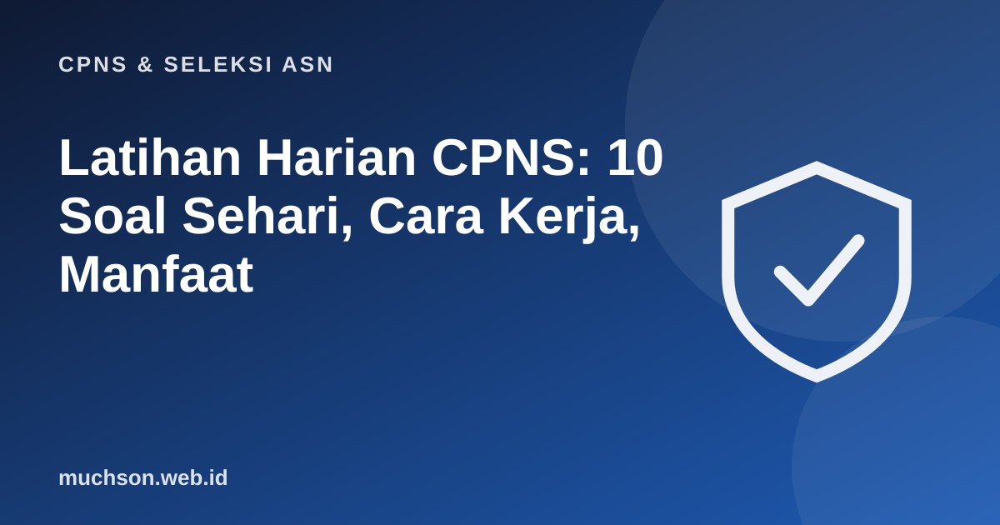

Beranda › Artikel › CPNS & Seleksi ASN
CPNS & Seleksi ASNLatihan Harian CPNS: 10 Soal Sehari, Cara Kerja, Manfaat
Kebiasaan kecil yang konsisten mengalahkan rencana besar yang berhenti di minggu kedua. Latihan harian di LolosSeleksi memberi 10 soal baru setiap hari, mengutamakan bab yang paling lemah, dan mencatat hari berturut-turut Anda berlatih. Berikut cara kerjanya dan cara membuatnya menjadi kebiasaan.

Cara kerja latihan harian
Setiap tanggal (waktu WIB) dan jalur (CPNS, PPPK, atau BUMN) menghasilkan 10 soal campuran. Soal dipilih server dari tanggal, jalur, dan bab prioritas Anda; kombinasi yang sama selalu menghasilkan soal yang sama, jadi soal hari ini konsisten sepanjang hari.
Deskripsi teks diagram
- Ambil tanggal dan jalur: tanggal WIB dan CPNS, PPPK, atau BUMN
- Tentukan bab prioritas: hingga tiga bab terlemah Anda
- 4 soal dari bab prioritas: bergantian di antara bab itu
- 6 soal sisanya: satu soal per bab lain dulu, lalu bab kedua
- Kerjakan 10 soal: pembahasan setelah menjawab
| Aspek | Ketentuan |
|---|---|
| Jumlah soal | 10 soal per hari |
| Porsi bab terlemah | 4 dari 10 soal, dari hingga 3 bab prioritas |
| Sisanya | Disebar ke bab lain, satu soal per bab sebelum ada bab yang mendapat soal kedua |
| Pergantian hari | Mengikuti tanggal WIB |
| Pencatatan | Hitungan hari berturut-turut sampai hari ini (atau kemarin bila hari ini belum dikerjakan) |
Kenapa sepuluh soal sehari bekerja
Dua temuan penelitian belajar mendukung pola ini. Pertama, uji diri dengan soal dinilai berguna tinggi oleh tinjauan Dunlosky dkk. (2013). Kedua, sesi yang tersebar dengan jeda membantu daya ingat dibanding satu sesi panjang (Cepeda dkk., 2006). Sepuluh soal mengambil sekitar 10 sampai 15 menit, sehingga mudah dipertahankan bahkan di hari sibuk.
Membangun kebiasaan, bukan hanya latihan
Hitungan hari berturut-turut membantu karena memberi umpan balik yang terlihat. Seperti dibahas pada artikel tentang membangun kebiasaan kecil, mulailah dari langkah sangat kecil, kaitkan dengan kebiasaan yang sudah ada, dan jangan melewatkan dua hari berturut-turut.
Coba latihan harian di LolosSeleksi hari ini, dan perluas dengan latihan per bab bila waktu memungkinkan.
Tanya jawab
Berapa soal latihan harian?
Kapan soal berganti?
Apakah ada untuk PPPK dan BUMN?
Apa itu hari berturut-turut?
Apakah cukup hanya latihan harian?
Referensi
- Dunlosky dkk. (2013), Improving Students' Learning With Effective Learning Techniques, Psychological Science in the Public Interest 14(1) (membuka tab baru)
- Cepeda dkk. (2006), Distributed Practice in Verbal Recall Tasks, Psychological Bulletin 132(3) (membuka tab baru)
- Halaman latihan per bab LolosSeleksi (membuka tab baru)